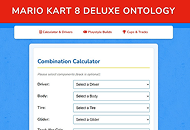
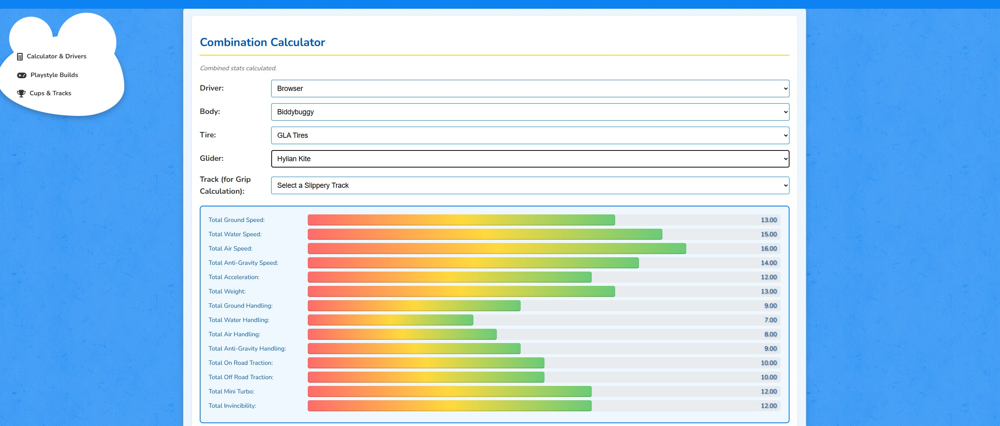
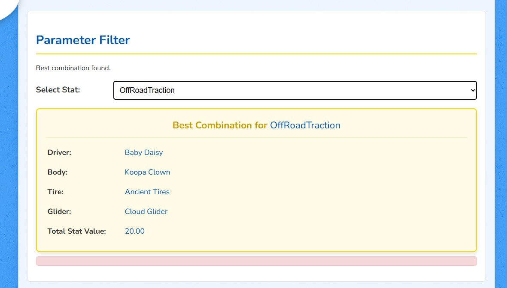
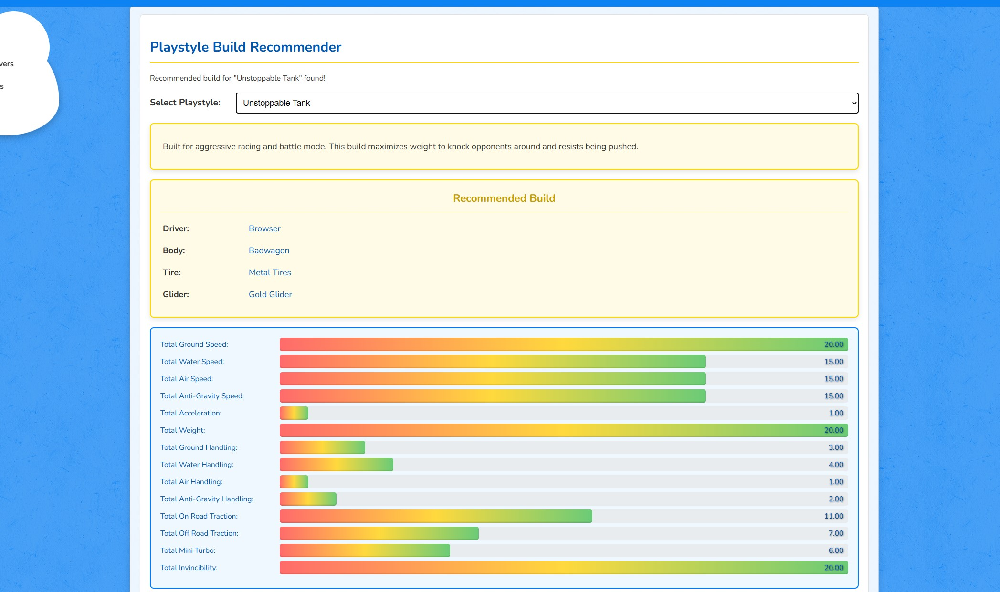
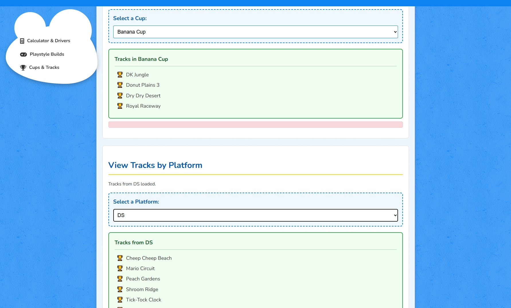

The Website Purpose
This website is an interactive Mario Kart 8 Deluxe build-analysis tool that turns ontology data into practical decision support. It helps players understand how character and vehicle-part choices affect stats and race behavior.
What It Does
The main page combines Driver, Body, Tire, and Glider selections and computes total values for speed, handling, acceleration, mini turbo, traction, and invincibility. It also supports track-aware grip calculations by integrating slippery track profiles from the ontology.
Beyond the calculator, the project includes a Playstyle Builds view that recommends optimized component combinations for different racing preferences, and a Cups & Tracks view that lets users browse tracks by cup, filter by original platform, and inspect slippery-terrain categories.
Ontology Integration
The project connects to a SPARQL endpoint and queries structured MK8D ontology classes and properties in real time. This makes the interface not just a static calculator, but a semantic-data frontend that explains builds, playstyles, and track conditions through linked data.
Project Details
Pipeline
-
Knowledge acquisition
Web scraping to extract drivers, vehicles, parts, tracks, cups, and stats.
-
Ontology modeling
Defined core classes + relations + properties in Protégé, then populated with scraped data.
-
Query UI
Website to query builds and compare stats with presets/filters.
Preview Mario Kart Ontology